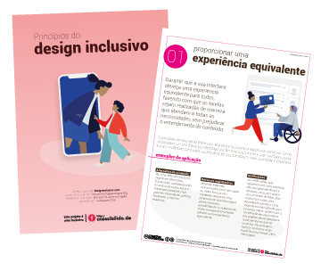
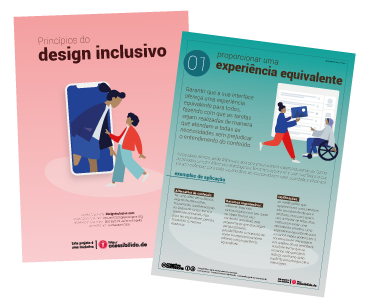
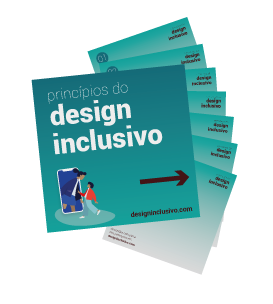

Antes de você utilizar este conteúdo como fonte de consulta, leia isso:
Os princípios do design inclusivo para produtos e serviços digitais são os mais próximos do que você precisa pensar em aplicar para todas as pessoas, no entanto, as dimensões do design inclusivo como um todo são muito maiores do que estes princípios. O conteúdo deste site está sendo reformulado e tem previsão de ser disponibilizado no decorrer do segundo semestre de 2023.
Princípios dodesign inclusivo
Sobre os princípios
Os Princípios do design inclusivo tratam basicamente de colocar as pessoas em primeiro lugar. É sobre projetar produtos pensando em necessidades específicas de pessoas com deficiências permanentes, temporárias, situacionais ou mutáveis de acordo com suas respectivas situações, ou seja, na verdade é projetar pensando em todos nós.
A ideia destes princípios é dar a qualquer pessoa - designers, profissionais de UX, conteúdistas, desenvolvedores, criadores, inovadores, artistas, pensadores... - envolvida no desenvolvimento de produtos e serviços, uma ampla visão e abordagem ao design inclusivo.
Proporcionar uma experiência equivalente
Garantir que a sua interface ofereça uma experiência equivalente para todos, fazendo com que as tarefas sejam realizadas de maneira que atendam a todas as necessidades sem prejudicar o entendimento do conteúdo.
As pessoas sempre serão diferentes, seja pela circunstância, escolha ou contexto. Como as pessoas utilizam diferentes abordagens e ferramentas para ler e usar interfaces, o que ela tem a oferecer para cada usuário deve ser equiparada em valor, qualidade e eficiência.
Exemplos de aplicação
- Alternativa de conteúdo: ter uma alternativa básica, seja texto alternativo, transcrição, áudiodescrição ou lingua de sinais torna o conteúdo acessível, mas para ser equivalente, precisa transmitir a mesma essência.
- Recursos ergonômicos: oferecer legendas sincronizadas com seu áudio ou vídeo torna o seu conteúdo acessível, mas proporcionar que elas sejam personalizáveis, possibilitando a mudança de cores ou reposicionamento oferece uma experiência equivalente.
- Notificações: as notificações que aparecem em uma interface são visualmente óbvias e atrativas, mas para quem usa um leitor de telas, elas costumam exigir uma descoberta proativa. Uma experiência equivalente para usuários cegos poderia ser a construção de mensagens em regiões ativas (feedback aural) de forma que os usuários não precisem realizar nenhuma ação explícita para chegar até a mensagem.
Link direto para o princípio "Proporcionar uma experiência equivalente" (copie para compartilhar)
Voltar para o índice ↥
Considerar a situação
As pessoas usam sua interface em diferentes situações. Certifique-se de que você está oferecendo uma experiência equivalente para as pessoas, independentemente das circunstâncias de uso.
Imagine que seus usuários podem ser avançados, iniciantes, jovens, idosos, crianças, pessoas no trabalho e com pouco tempo para interagir, pessoas em casa, pessoas andando na rua ou mesmo pessoas sob algum tipo de pressão. Todas essas situações podem ter algum impacto no uso. Para usuários que possuem algum tipo de necessidade específica, o impacto de uso pode ser ainda maior.
Exemplos de aplicação
- Contrastes: ao se utilizar uma interface ao ar livre, poderá ocorrer diminuição de contraste devido a incidência de luz solar.
- Ajuda de acordo com o contexto: quando os usuários acessam pela primeira vez um determinado formulário ou uma funcionalidade nova, faz sentido alguns deles precisarem de algum tipo de ajuda contextual. No entanto, após se familiarizar com essa tela, essa ajuda pode se tornar redundante e até mesmo causar distração em algumas situações. O usuário deve ter ferramentas de apoio de como ele pode ter o controle desse tipo de conteúdo, exibindo-o ou não.
- Legendas quando em movimento: seu conteúdo em vídeo pode ser consumido por usuários que estão se locomovendo em um transporte público, por exemplo. Neste caso específico, uma boa prática poderia ser manter o áudio configurado como desativado e as legendas ativadas, por padrão.
Link direto para o princípio "Considerar a situação" (copie para compartilhar)
Voltar para o índice ↥
Ser consistente
Usar convenções familiares e aplicá-las de forma consistente.
Interfaces que são familiares costumam aplicar padrões bem estabelecidos. Esses padrões deve ser utilizados consistentemente dentro da interface para reforçar seu significado e propósito. Isso deve ser aplicado as funcionalidades, comportamentos, editoriais e apresentações. Você deve informar as mesmas coisas da mesma maneira e as pessoas devem poder fazer as mesmas coisas da mesma maneira.
Exemplos de aplicação
- Padrões de design consistentes: use padrões de design já estabelecidos e consistentes para ajudar a criar familiaridade e compreensão.
- Conteúdo consistente: use uma linguagem simples e consistente em todas as plataformas (inclusive em conteúdos complementares que são disponibilizados apenas para usuários de leitores de tela), como alternativas de texto, cabeçalhos, rótulos para botões e campos de formulários e assim por diante. Manter um estilo editorial consistente é importante. Garantir que no topo das telas sempre tenha um título e um parágrafo de resumo claramente marcado ou garantir que os marcadores (bullets) sempre comecem com uma definição em negrito, como nestes exemplos.
- Arquitetura de página consistente: use uma arquitetura de página consistente em todas as telas para ajudar as pessoas a "escanear" e navegar pelo conteúdo principal e relevante com menor esforço cognitivo.
Link direto para o princípio "Ser consistente" (copie para compartilhar)
Voltar para o índice ↥
Dar o controle
Possibilitar que as pessoas possam interagir com o conteúdo da forma que preferirem.
Não remova ou desative a possibilidade do usuário alterar e ajustar as configurações padronizadas do navegador ou da plataforma que usa, como orientação de tela, tamanho da fonte, zoom ou contraste. Evite também alterações no conteúdo de forma automática, que não tenha sido provocada por uma ação do próprio usuário, a menos que haja uma maneira de deixar o usuário no controle.
Exemplos de aplicação
- Controle de rolagem: "scroll infinito" pode ser problemático, especialmente para usuários que navegam através do teclado porque eles não conseguem ultrapassar o fluxo de atualização de conteúdo, chegando ao rodapé, por exemplo. Dê a opção de desativar esse recurso e/ou substitua-o por um botão do tipo "carregar mais".
- Faça com que seja possível parar: alguns usuários podem ter náuseas com animações do tipo "parallax", para outros as animações podem ser um ponto de distração simples. Quando elas ocorrerem automaticamente, elas devem ser fáceis de operar e possuir um controle que permita desligá-las.
- Permitir zoom: existem muitas razões pelas quais um usuário pode querer aplicar zoom através de um simples gesto de "pinça" em seus dispositivos de toque. Tenha certeza de que o zoom natural da aplicação não seja removido ou que o conteúdo se adapte a tela quando ele for aplicado.
Link direto para o princípio "Dar o controle" (copie para compartilhar)
Voltar para o índice ↥
Oferecer escolha
As pessoas devem ter diferentes maneiras de concluírem determinadas tarefas, especialmente aquelas que são complexas ou não são padronizadas.
Muitas vezes, há mais de uma maneira de concluir uma tarefa. Você não pode presumir qual seria o caminho preferido de alguém. Ao fornecer alternativas para o layout e a conclusão da tarefa, você oferece às pessoas opções adequadas às suas circunstâncias no momento.
Exemplos de aplicação
- Várias formas de concluir uma ação: sempre que possível, forneça várias maneiras de concluir uma ação. Em uma ação de "swipe" (arrastar o dedo para a direira ou esquerda) em interfaces de toque, por exemplo, um item pode conter diversas opções de ação, como editar ou excluir o item (e essa ação também deveria ser executada através de outras formas).
- Layout: sempre que houver conteúdo extenso, considere oferecer diferentes formas de visualização (grade ou lista). Isso atende as pessoas que preferem ver imagens maiores ou descrições melhores.
- Alternativas acessíveis: formas alternativas de apresentar dados, como tabelas de dados em conjunto com gráficos, devem estar disponíveis para todos os usuários como uma opção, ao invés de apenas um link oculto disponível para quem usa um leitor de telas. Alternativas acessíveis podem beneficiar não apenas um determinado grupo específico, mas qualquer outro usuário fora deste grupo, desde que seja oferecido a escolha.
Link direto para o princípio "Oferecer escolha" (copie para compartilhar)
Voltar para o índice ↥
Priorizar o conteúdo
Ajude as pessoas a se concentrarem nas principais tarefas, funções, recursos e informações, priorizando-as no conteúdo e layout.
Interfaces podem ser difíceis de se compreender quando os principais recursos não são claramente expostos e priorizados. Um site ou aplicativo pode fornecer muitas informações e funcionalidades, mas as pessoas devem poder se concentrar em uma coisa por vez. Identifique o propósito central da interface e em seguida, destaque o conteúdo e as funções necessárias para se cumprir esse propósito.
Exemplos de aplicação
- Mantenha o foco na tarefa: exiba progressivamente recursos e conteúdo quando necessário, não de uma só vez.
- Priorizando tarefas: um aplicativo de e-mail é principalmente para escrever e ler e-mails. O botão "escrever mensagem" está presente em todas as telas. Este é o primeiro ou um dos primeiros elementos na "ordem de foco" (que deve ser natural). A caixa de entrada é priorizada em relação a outras listas de email, como mensagens "enviadas" ou "spam". Recursos menos usados, como marcação ou organização de email em pastas, aparecerão em outro momento seguindo a ordem de foco natural, pois geralmente serão utilizados apenas quando a tarefa principal (ler email) for concluída.
- Priorizando o conteúdo: o conteúdo principal em uma notícia ou artigo é a história, portanto, ele deveria ser o primeiro item em uma interface, tanto visualmente quanto na ordem de foco a partir de sua origem (de onde foi acessado). Conteúdo relacionado, como artigos semelhantes, deve estar organizado de forma que venham em seguida (e não antes ou durante a leitura do artigo principal). Conteúdos não relacionados, deveriam vir após esse último e assim sucessivamente. Pense na arquitetura de informação de seu conteúdo.
- Priorizando a objetividade: links, cabeçalhos e botões deve usar linguagem simples e colocar o objetivo em primeiro lugar. Isso se aplica a texto visível e oculto. Isso torna o texto fácil de "escanear" visualmente falando e simples de ouvir para usuários de leitores de tela. A linguagem simples também beneficia falantes não nativos e é mais fácil de se traduzir.
Link direto para o princípio "Priorizar o conteúdo" (copie para compartilhar)
Voltar para o índice ↥
Adicionar valor
Considere a importância dos recursos e entregas e como eles melhoram a experiência para diferentes usuários.
Os recursos devem agregar valor à experiência do usuário, oferecendo maneiras eficientes e diversificadas de localizar e interagir com o conteúdo. Considere os recursos do dispositivo, como API's de voz, geolocalização, câmera e vibração, e como a integração com dispositivos conectados ou com uma segunda tela pode fornecer opções.
Exemplos de aplicação
- Integração com dispositivos conectados ou segunda tela: usar interfaces de voz para controlar multimídia, procurar conteúdo, ouvir música ou assistir a um vídeo, agrega valor para pessoas que desejam usar outras interfaces (mesmo que seu conteúdo não tenha sido planejado para uso em outro lugar).
- Integração com API's de plataforma: aprimore a funcionalidade usando os recursos da própria plataforma. Uma API de vibração torna notificações mais utilizáveis por pessoas surdas e com deficiência auditiva, enquanto uma API de geolocalização facilita a utilização de serviços baseados em localização para pessoas com deficiências de mobilidade.
- Facilitar a conclusão da tarefa: adicione um botão do tipo "exibir senha" em campos de digitação de senha para que os usuários possam verificar se a inseriram corretamente ou adicione um recurso de identificação de digital em campos protegidos por senha.
Link direto para o princípio "Adicionar valor" (copie para compartilhar)
Voltar para o índice ↥
Assista a um bate-papo em formato de aula
A Itamara Ferreira, designer de marcas e professora do programa Leiautar, convidou a mim, Marcelo Sales e a Talita Pagani para um bate-papo sobre design inclusivo e esse papo de quase 3 horas foi transformado em 5 mini-aulas GRATUITAS sobre esse tema. Caso queira participar e assistir, clique no link do curso:
Assistir as aulas
Quer imprimir ou compartilhar?
Faça o download dos pôsteres dos princípios em duas versões (uma com fundo colorido e outra com fundo branco), ambas em versões tamanho A4. Há também um arquivo compactado com imagens em tamanho 1200px prontas para compartilhamento no Instagram.
-
Versão em PDF com fundo branco - 1mb

-
Versão em PDF com fundo verde - 1mb

-
Imagens para compartilhar no Instagram

Os posteres originais (em inglês) foram produzidos pela equipe de acessibilidade do Barclays, um banco de investimentos do Reino Unido. Se você quiser saber mais sobre a construção desse material, leia este artigo escrito pelo David Caldwell (Gerente de Acessibilidade Digital do Barclays) link externo, irá abrir em uma nova janela e publicado no blog do The Paciello Group.